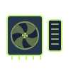
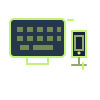

PROCESSING · 01
CPU
Central Processing Unit
Executes program instructions, performs calculations, and coordinates the computer’s operations.
YOUR VISUAL FIELD GUIDE
A quick visual reference to the hardware inside a computer and the job each component does.
Central Processing Unit
Executes program instructions, performs calculations, and coordinates the computer’s operations.

Random-Access Memory
Temporarily holds data and instructions that active programs need to access quickly. Its contents clear when power is off.

Long-Term Storage
Keeps the operating system, applications, and files saved, even when the computer is turned off.

Main System Board
Connects the computer’s components and provides the pathways that let them communicate.

Power Supply Unit
Converts electricity from a wall outlet into regulated power that the computer’s components can use.

Graphics Processing Unit
Processes visuals, images, video, and 3D graphics for display. It may be built into the processor or installed as a separate card.

Fans and Heat Sinks
Moves heat away from components and releases it, helping prevent overheating and maintain reliable operation.

Peripherals
Input devices send information to the computer; output devices present results. Keyboards, mice, monitors, and speakers are examples.